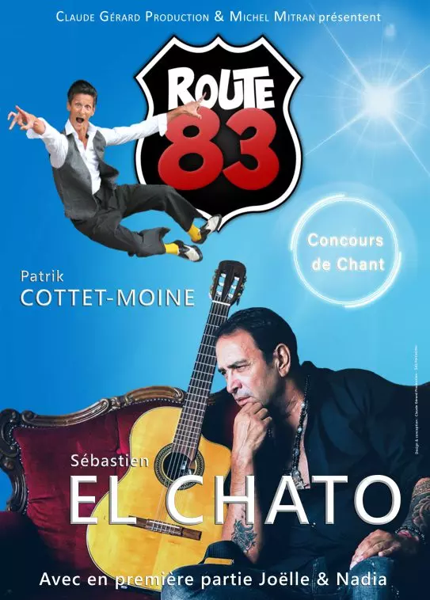

Sébastien EL CHATO
« Je vis de mon désir de vivre », voilà comment on pourrait qualifier le début d’une nouvelle ère pour Sébastien El Chato. Avec son dernier opus « C’est la vie », composé de chansons inédites en espagnol dans la mouvance Pop Latine Urbaine. Ce véritable précurseur de la musique gipsy nous avait déjà surpris en 2016 au cours d’une tournée européenne exceptionnelle, avec un album rythmé, de grandes balades, des duos d’exception, le tout sur des rythmes pop latinos révélant des sonorités très actuelles. Sébastien El Chato ne s’arrête jamais, est là où ne l’attend pas, s’amuse, se réinvente et cela nous plaît ! D’origine andalouse, l’artiste signe un retour en beauté, et ce ne sont pas les radios qui diront le contraire ! Du flamenco-pop à la musique urbaine en passant par la musique world, inspiré des plus grands tels que Alejandro Sanz, Gente de Zona, Marc Antony, Sébastien El Chato continue dans cette nette avancée vers la maturité artistique, et il n’a pas encore fini de nous surprendre !
Patrik COTTET-MOINE
Patrik s’engage dans la marine nationale à 16 ans mais est renvoyé 6 ans plus tard pour « incompatibilité avec l’esprit militaire ». Il découvre alors sa vraie nature, en jouant des sketchs de mime burlesque dans la rue. En 1989, Patrik crée le duo de mime « Lepetit et Legrand » qui tiendra plusieurs mois l’affiche du Théâtre d’Edgar à Paris. En 1994, il crée le groupe de chansons d’humour à voir et à entendre « les Zabloks » toujours actifs à ce jour. En 2002 Patrik revient au mime, avec un premier spectacle intitulé « Mime de rien ». En 2011, un deuxième seul en scène est coécrit avec Michel Courtemanche intitulé « Chez lui ». Ces deux spectacles constamment en tournée, ont été joué dans 30 pays sur les 5 continents. Dans un nouveau besoin de musique, création en 2018 du spectacle « Au quai » chansons d’humour mais pas que… En 2019, il collabore avec le Cirque du Soleil pour le spectacle Messi Ten.
Parallèlement à la scène, Patrik fait des apparitions régulières au cinéma (Valérian et la Cité des 1000 Planètes de Luc Besson, Avis de mistral de Rose Bosch…).
Joëlle SAVINIEN
Tantôt chanteuse pop tantôt soprano, Joëlle développe un répertoire extrêmement éclectique, toujours populaire mais exigeant. De l’Opéra de Marseille aux plateaux TV (émissions de Michel Drucker) en passant par l’accompagnement d’artistes (Dave, Gilbert Montagné, tournée Âge Tendre et Tête de Bois…), elle rejoint cette année la tournée Route 83 pour un set d’une qualité musicale implacable, juxtaposant Michel Legrand, AC/DC, Maurane et… Ennio Morricone !
Nadia BABA
À l’âge de 15 ans, Nadia écrit ses premières compositions. Interprète oscillant entre la chanson française, le pop rock et la musique du monde, elle croise le chemin du jazz en 2011 en la personne de Louis Petrucciani, frère du célèbre pianiste. Elle crée avec lui et Jean-Pierre Llabador (guitariste de Johnny Hallyday et Eddy Mitchell) un trio. En 2016, elle sort un album de 5 titres diffusé sur plusieurs radios. Trois ans plus tard, elle dirige la chorale Une Voix pour Tous au Zénith Omega de Toulon devant 7 000 spectateurs. Intégrant la tournée Route 83 dans son édition 2021, elle livre un authentique hommage à Véronique Sanson.
MARGARITA
«MARGARITA», le groupe officiel de la tournée, est exclusivement constitué de musiciens professionnels aguerris aux très nombreuses références: accompagnements d’artistes, scènes nationales, galas privés...
Cinq musiciens d’exception réunis pour l’occasion.
Juanito : Percussionniste, responsable du groupe
Selim : Guitariste
Sébastien : Pianiste
Antoine : Bassiste
Aurélien : Batteur